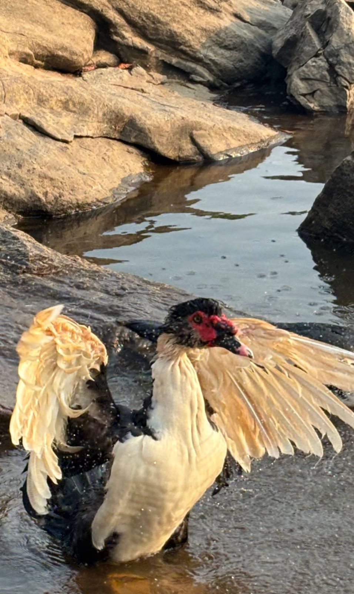
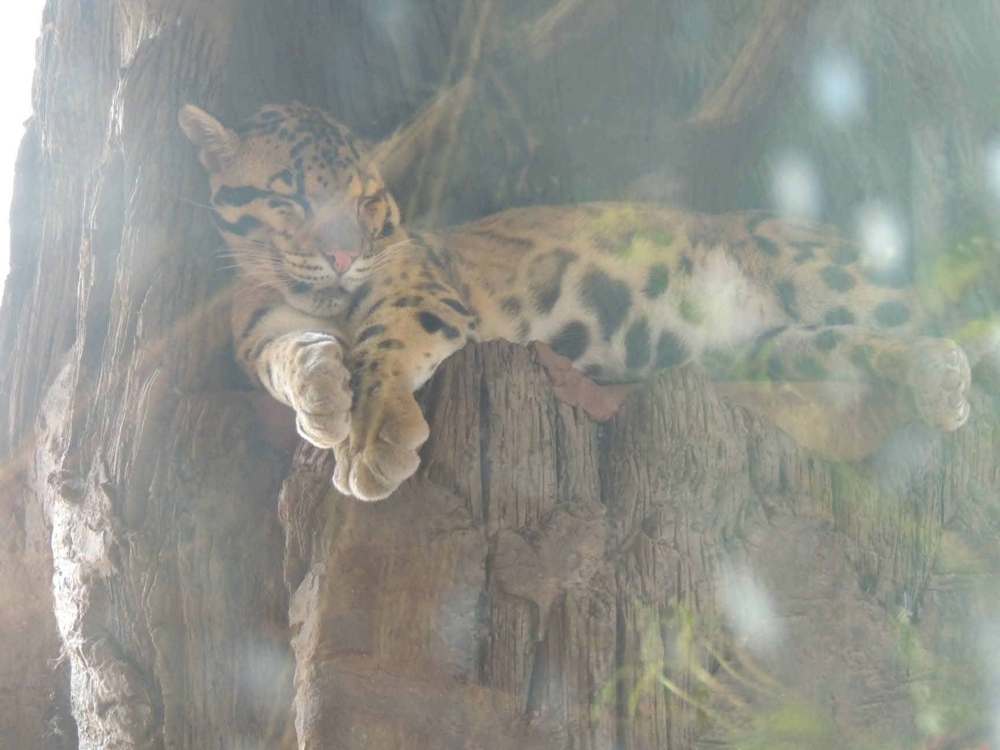
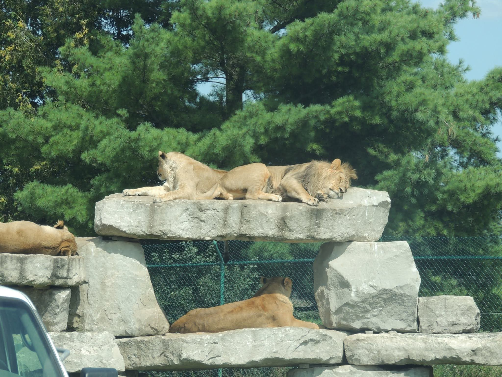

Sunrise Marsh Tour
QuietSlow route along marsh edges for wading birds and early-morning mist over water.
Amuay Wildlife Park keeps visits low-impact by limiting travel to guided vehicles on set tracks. These examples show how tours can highlight different areas without increasing disturbance.
Pick one based on light, weather, and what you want to observe.

Slow route along marsh edges for wading birds and early-morning mist over water.

Mixed route that moves from open grasslands to gentle slopes for broad views and varied wildlife.

Late-afternoon route for changing light and increased animal movement as temperatures drop.